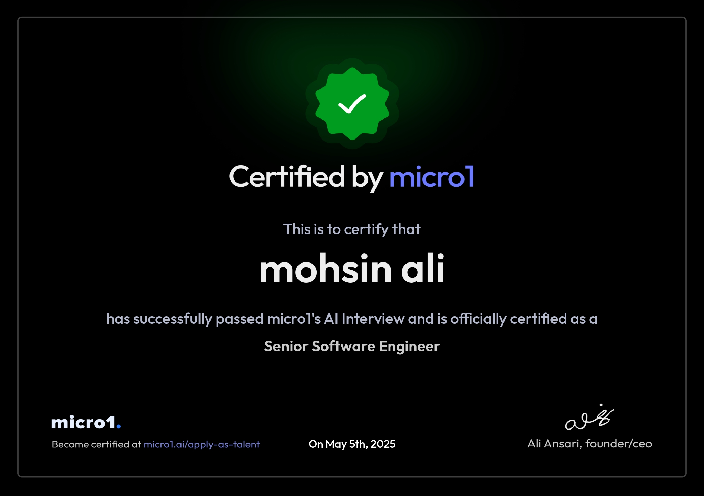

<span>|</span>
Senior Software Architect & Full-Stack Engineer
<p>Architecting high-throughput, event-driven distributed systems and microservices using .NET Core & Azure. Engineered for scalability, reliability, and technical leadership.</p>
• Professional Summary
An accomplished technical anchor and enterprise specialist trusted to deliver national-scale software solutions
Trusted to deliver national-scale software solutions for the UN, USAID, and Fortune 500 clients. Specialized in stabilizing legacy infrastructure, driving cloud modernization, and owning complex software lifecycles end-to-end: Data → API → UI → Deployment.
Recognized as an elite troubleshooter who rapidly resolves high-impact production anomalies that stall other development streams. A strategic engineering lead who combines hands-on execution with active cross-functional mentorship to elevate team capabilities.
Deep expertise across diverse operational domains, including Supply Chain Logistics, AI Video Surveillance, Medical Billing, GIS Platforms, and real-time Fleet Management tracking platforms.
0+
Years Experience
0+
Systems Delivered
Micro1
Vetted Engineer
Elite Top 1%• Technical Expertise
Engineering systems built
for scale & performance_
Frontend Engineering
React, Angular, Blazor (Server/WASM), TypeScript. Rich interactive UIs and responsive web structures.
Backend Engineering
C# (.NET Core 9+), Python, C/C++, VB.Net. Minimal APIs, MediatR, EF Core. High-throughput service layers.
Enterprise Web
ASP.NET MVC, Razor Pages, SharePoint. Maintaining and modernizing corporate monoliths.
Architecture
Microservices, DDD, CQRS, Event-Driven, gRPC, Clean/Onion, Designing resilient systems.
GIS & Spatial Systems
ArcGIS Maps SDK, React Leaflet/MapBox, GeoJSON. National-scale mapping for USAID/UN.
Data Viz & BI
Microsoft Fabric (OneLake), Power BI (Direct Lake, Embedded), D3.js. High-performance enterprise analytics.
Databases & Storage
SQL Server, PostgreSQL, PostGIS, NoSQL (MongoDB, Redis). Complex query tuning and spatial data structures.
Enterprise & Cloud
Azure, AKS, Docker, Kubernetes, CI/CD. Scalable cloud-native deployments.
Enterprise Cloud AI
Azure OpenAI, Azure AI Search, Cosmos DB (Vector Search), pgvector. LangChain RAG, ML.NET. Cognitive services and Enterprise Analytics.
Computer Vision & Edge AI
YOLOv8, OpenVINO, OpenCV, DeepStream. Real-time video analytics, tracking, and edge hardware inference optimization.
Real-Time & Media
WebRTC, HLS/WHEP, SignalR, MQTT, FFmpeg, JSON Forms. Sub-second livestreaming and IoT telemetry platforms.
Technical Leadership
Agile/Scrum, DevSecOps pipelines, Cross-functional mentoring, Project architecture mapping. Team delivery anchor.
• Certifications
Certifications_
Micro1 Vetted - Senior Software Engineer
Issuer: micro1.ai
Date: May 5th, 2025
Verified By: Passed micro1's AI Interview & Technical Assessment for Senior Software Engineer role.
↗ View Certificate
Top 1%• Professional Experience
Building Enterprise-Scale Systems for
Global Clients_
Senior Software Engineer
SMASH / BlueEye | Remote, USAProblem: Legacy video surveillance platform was a monolith with high latency and limited AI capabilities. Needed modern, scalable architecture for real-time analytics and sub-second livestreaming.
Solution - Microservices Migration: Architected migration to .NET 8 microservices on Azure with bounded contexts: video ingestion, AI analytics, notifications.
Solution - Real-time Streaming: Directed architecture of WebRTC/HLS/WHEP livestreaming engine using Azure Service Bus and Event Grid for <1s latency.
Solution - AI Anomaly Detection: Engineered AI anomaly detection parsing VAPIX events via gRPC with Chain-of-Thought reasoning and LLM integration.
Impact: Delivered a scalable cloud-native platform enabling real-time threat detection. Reduced latency and improved system reliability for distributed security operations.
Senior Software Engineer
GlobalTranz | Remote, USAProblem: Multi-million dollar 3PL platform suffered from undocumented code, security vulnerabilities, slow payment cycles, and poor observability.
Solution - Legacy Recovery: Took ownership of undocumented 3PL suite. Reverse engineered architecture, stabilized Accounting/Auditing modules, and neutralized SQL injection vulnerabilities.
Solution - Fin-Tech Quick Pay: Engineered serverless event-driven ledger via Azure Service Bus for dynamic surcharges and automated ACH settlements.
Solution - Audit & Microservices: Built domain-oriented .NET Core microservices with Clean Architecture deployed on Docker/AKS.
Impact: Cut payment processing from 7 days to 24 hours. Improved system stability for 5000+ daily transactions.
Senior Software Engineer
CUBE Health Care System | Islamabad / USA ClientProblem: US-based healthcare client needed scalable platforms to manage medical billing, revenue cycle, and provider workflows while maintaining HIPAA compliance.
Solution - Multi-Product Delivery: Engineered backend APIs and modernized front-end modules for billing, provider, and application portals. Delivered 6+ critical healthcare modules.
Impact: Improved billing accuracy, ensured HIPAA compliance through audit trails and secure logging, and reduced communication delays.
Full Stack Software Engineer | System Architect
MSI / Experience International | USAID & USDA ProjectsProblem: USAID and USDA required enterprise platforms for planning, monitoring, and evaluation of international development programs.
Solution - National M&E Platforms & GIS: Architected and delivered 5 national-scale systems, enterprise GIS web applications, geo-databases and automated ETL pipelines.
Impact: Enabled data-driven management of multi-million dollar USAID programs across Pakistan for 100+ projects.
Sr. Software Engineer
BRIGHTSPYRE.COM | IslamabadPRMS - Field Operations: Architected MIS for PDMA PaRRSA Peshawar. Enabled field officers to collect, validate, and report project progress in real-time.
Impact: Delivered 3 enterprise-grade platforms increasing transparency for government disaster recovery projects.
Full Stack Software Engineer | Architect
Xpert Technologies | AbbottabadTeleBudgie IV Web Migration: Architected transformation from desktop to web using Onion Architecture for 15,000+ fleet assets with real-time tracking & geo-fencing.
Impact: Migrated 15,000+ assets to scalable web platform. Enabled 24/7 remote monitoring.
Senior ASP.Net Software Engineer | Technical Lead
ADVANCE I-TECH SOLUTIONS | IslamabadTIMS ERP: Led end-to-end development of Trading & Indenting Management System for SMB market.
Impact: Delivered TIMS ERP to automate business operations for small to mid-market firms.
• Get In Touch
Let's connect_
I love autonomy, creativity and new challenges. Let's build something amazing together.
+92 331 9337096
mohsin.nisar.dev@gmail.com
MohsinNisarDev
Islamabad, Pakistan